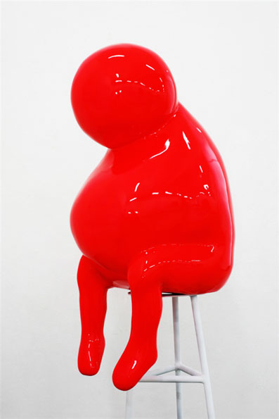

FULL MAPWhite marker: current position
N
↑
Facing north
PLAYER 01Sweet Fatty
←↑↓→
MOVEESCTAKE A BREAKOnly your surroundings are visible

Explore between towering walls with Sweet Fatty
and complete K, I, S, and T in order.
A little wandering is part of discovery.
Your first discovery meets the world.
Check that your browser supports 3D graphics, then try again.